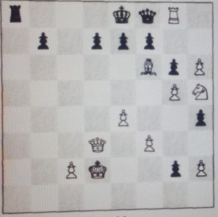

Bienvenue sur le site de l'association Échecs & Mines, dédiée à la pratique, la découverte et la promotion des échecs. Nous organisons régulièrement des tournois, publions des articles, et proposons des problèmes pour progresser ensemble. Nous nous réunissons les mardis soirs pour jouer et échanger autour d'un échiquier et d'une bonne bière.
Trait aux blancs : Les blancs peuvent-ils mater en 2 coups ?
Retrouvez nos derniers articles sur les championnats de France universitaire.
Voici les résultats des derniers tournois :